Applying Creativity to Generating a Concept
Systems Architecture · Chapter 12
From Reducing Ambiguity to Applying Creativity
- Stakeholder analysis and goal writing (Ch. 11) reduce ambiguity. Developing the system concept is fundamentally a creative process
- The architect must be prepared to architect “up” (toward stakeholder needs) and “down” (toward architecture and operations) from the concept — not just receive a concept from above
- In Chapter 7 we analyzed the parts of a concept. Here we use that analysis to structure how a new concept gets created — with emphasis on applying creativity, worked through a Hybrid Car example
Figure 12.1 · Three Themes in Architecting
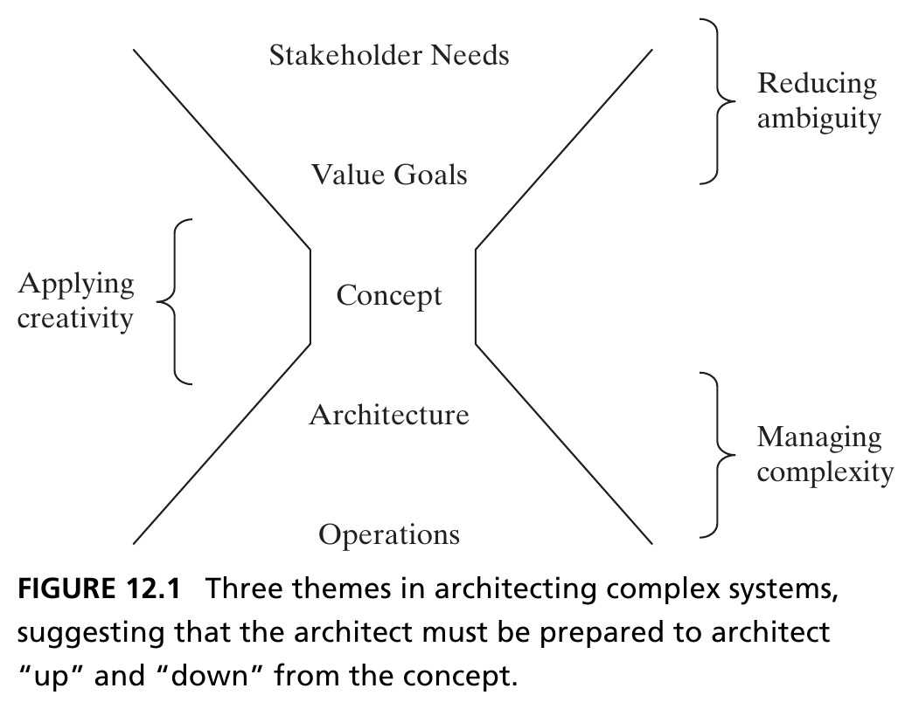
Concept sits at the center: stakeholder needs and value goals flow down into it (reducing ambiguity); architecture and operations flow out of it (managing complexity); creativity is applied at the concept itself. Source: Crawley, Cameron & Selva (2016), Fig. 12.1.
12.2 Applying Creativity to Concept
What Is Creativity?
- Creativity must result in a novel output — on this, most agree. Less agreement: must it be intentional? Must it have influence or impact?
- We take the position that creativity must be intentional — accidentally spilling paint on a canvas and discarding it isn’t creative — but creativity should not be defined by impact, since a focus on impact too early can restrict ideation
In an ideal creative process, the number of concepts under consideration should balloon — an idea first articulated by Alex Osborn, originator of “brainstorming”: “quantity breeds quality.”
Figure 12.2 · Applying Intentional Creativity
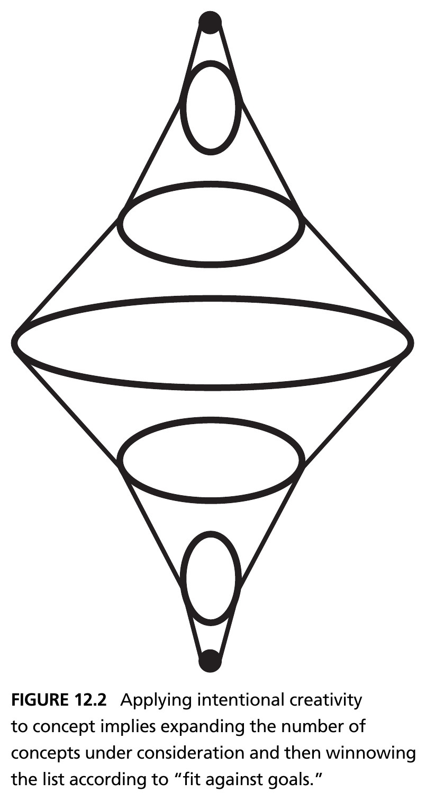
Applying intentional creativity to concept means expanding the number of concepts under consideration, then winnowing the list according to “fit against goals.” Source: Crawley, Cameron & Selva (2016), Fig. 12.2.
Unstructured vs. Structured Creativity
Unstructured Creativity
The more prevalent approach: brainstorming, blue-sky ideas, free association. Focuses on ideating without prejudices from previous experience — forming new pathways through the concept-space (de Bono).
Structured Creativity
Holds that problem analysis can help solution synthesis. Creative thinking is not fundamentally different from ordinary problem solving — creativity can be stimulated through analysis.
Tip
Both are necessary. Our view of system architecture more closely reflects structured creativity — we’d rather succeed with an architecture that’s chosen, not one arrived at by luck.
Figure 12.3 · Component Recombination
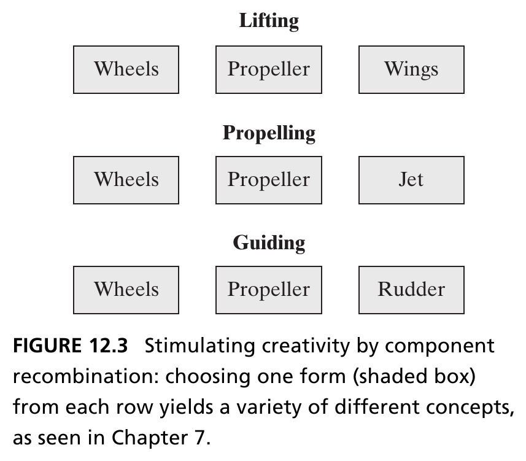
A frequent theme in structured creativity: decompose the problem into pieces (here, the transporting concept’s three internal functions), with more than one form-choice available per piece — choosing one option per row (shaded) yields distinct concepts, as in Ch. 7’s morphological matrix. Source: Crawley, Cameron & Selva (2016), Fig. 12.3.
Completeness Frameworks and TRIZ
- Completeness frameworks use lists to stimulate ideation — e.g., cataloging forms of energy (linear kinetic, rotational kinetic, potential, chemical…) and asking what a concept using each would look like
- De Bono’s Six Hats is a team-based completeness framework: six roles (Managing, Information, Emotions, Discernment, Optimistic Response, Creativity) that force a more holistic evaluation of a problem
- TRIZ (Theory of Inventive Problem Solving), developed by Genrich Altshuller from 40,000 patent abstracts, resolves apparent contradictions (“a faster train needs a more powerful engine, but a more powerful engine is heavier”) using 40 inventive principles — e.g., Mechanics Substitution: replace a mechanical means with an optical, acoustic, magnetic, or electromagnetic one
Identifying Concept
- Recall from Chapter 7: concept is a vision, idea, notion, or mental image that maps function to form — it embodies a principle of function and operation, and includes an abstraction of form
- Creating the concept is a moment of peak creativity — the selection of concept has a deep, far-reaching impact, and establishes the solution-specific vocabulary
- “The concept rationalizes the structure of the architecture.” — Steve Imrich. Concept is not a product attribute; it is a mapping from one attribute (function) to another (form) — separate from, and prior to, the architecture itself
Figure 12.4 · Representation of Concept
- Concept sits along a diagonal between pure function and pure form — neither fully abstract nor fully concrete
- In Chapter 11 we analyzed concepts in OPM, completing the To-By-Using framework
- For complex systems, OPM may only work at the first level — domain-specific language and methods quickly become necessary
A Four-Step Concept Framework
1. Develop the Concepts — start with the SPS and goals; identify solution-neutral operands/processes; apply creativity to specialize a specific operand/process/instrument; check against goals.
2. Expand and Develop Concept Fragments — decompose rich, multifunctional concepts to reveal internal functions; repeat Step 1 for each fragment.
3. Evolve and Refine Integrated Concepts — search systematically through fragments; combine combinatorially, with constraints.
4. Select a Few Integrated Concepts — apply backward (fit to goals) and forward (potential for good architecture) considerations.
Box 12.1 · Principle of Creativity
“Imagination is more important than knowledge.” — Albert Einstein
“Creativity is bred by creating a gap between current reality and the vision for the system.” — Peter Senge
- For any interesting, real problem, there will be essential tensions among the goals — creativity in architecture is the process of resolving these tensions
- To maximize the possibility of creativity: treat all goals as tradable, remove organizational/cultural barriers, and consider the entire space of possibility
- “Creativity is like driving a car at night. You never see further than your headlights, but you can make the whole trip that way.” — E.L. Doctorow
Section 12.2 Summary
- Creativity must be intentional, but should not be judged by impact during ideation — that comes later, from metrics
- Unstructured creativity (brainstorming) and structured creativity (component recombination, completeness frameworks, TRIZ) are complementary, not competing, approaches
- Concept is a mapping from function to form, developed through a four-step framework: develop, expand into fragments, evolve/refine integrated concepts, and select a few for further development
12.3–12.5 Developing the Hybrid Car Concept
Step 1: Develop the Concept
Recall the Hybrid Car’s system problem statement from Chapter 11:
Provide our customers a product to transport them and their possessions inexpensively and in an environmentally sound manner, by allowing them to drive themselves, their passengers, and light cargo fuel-efficiently and with good handling characteristics, using a hybrid gas/electric car.
- The word “hybrid” is itself a short form — it suppresses which two energy poles are combined. Historically, there was even a time when “hybrid” commonly meant hybrid steam/gas, not gas/electric
Step 2: Expand the Concept — Propulsion
- “Driving” is a concept rich in meaning — we decompose it into fragments, beginning with propulsion
- Three overarching vehicle classifications, based on how many external energy sources the propulsion system depends on:
Monovalent
One external energy source (most cars today, including simple hybrids with one fuel source)
Bivalent
Two external energy sources (e.g., a plug-in hybrid: electricity and fuel)
Multivalent
Three or more (e.g., the Fiat Siena Tetrafuel: gasoline, ethanol blends, or CNG)
Figure 12.5 · Four Vehicle-Moving Concepts
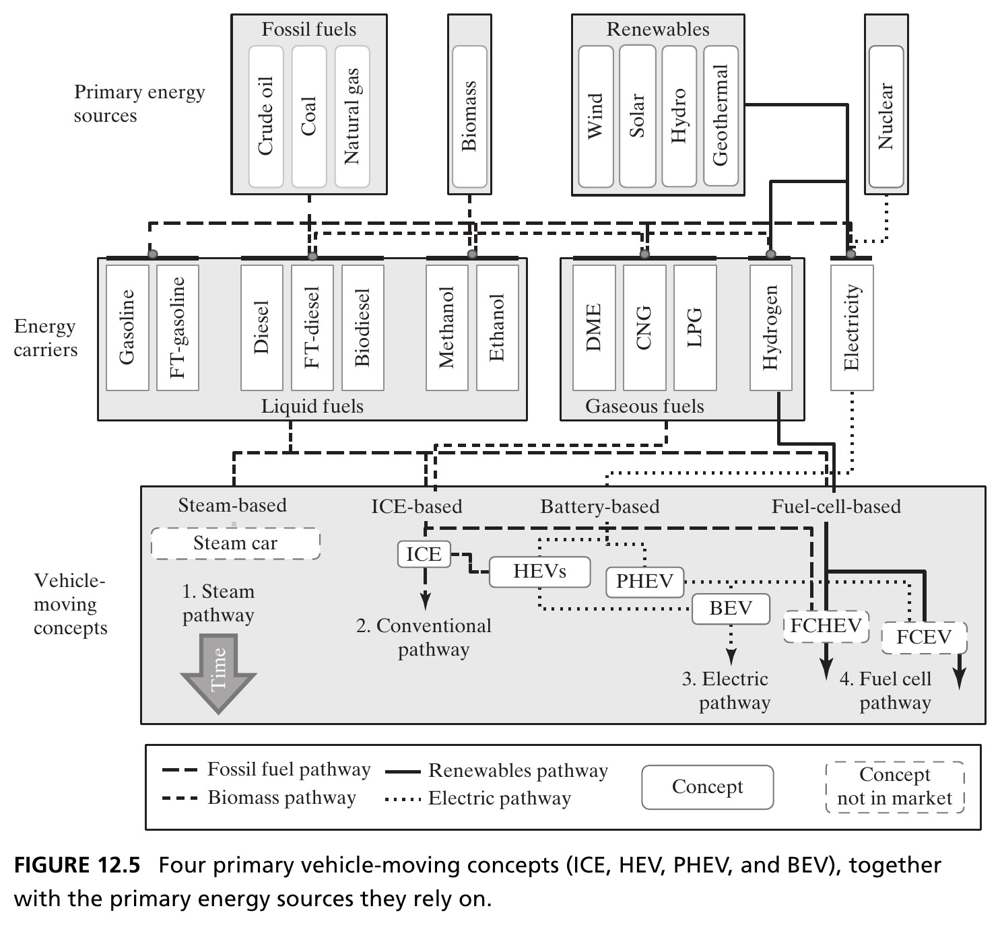
Four energy-carrying/storage pathways: steam (1790–1906, no successful modern commercialization), ICE (dominant today), battery-based (HEV → PHEV → BEV), and fuel-cell-based — each drawing on different primary energy sources and carriers. Source: Crawley, Cameron & Selva (2016), Fig. 12.5.
Seven Additional Concept Fragments
Beyond propulsion, seven internal functions capture the value added by hybrid systems:
- Motor start-stop — shut off the engine at rest, restart on demand
- Regenerative braking — capture braking energy that would otherwise be lost to friction/heat
- Power boost — electric motor adds torque beyond what the engine alone delivers
- Load level increase — engine drives a generator to recharge the battery
- Electric driving — propel using only stored electric energy, engine decoupled
- External battery charging — plug into the grid (differentiates PHEVs from other HEVs)
- Gliding — decouple both engine and electric system, coast on gravity alone
Figure 12.6 · Fuel Savings from Start-Stop and Braking
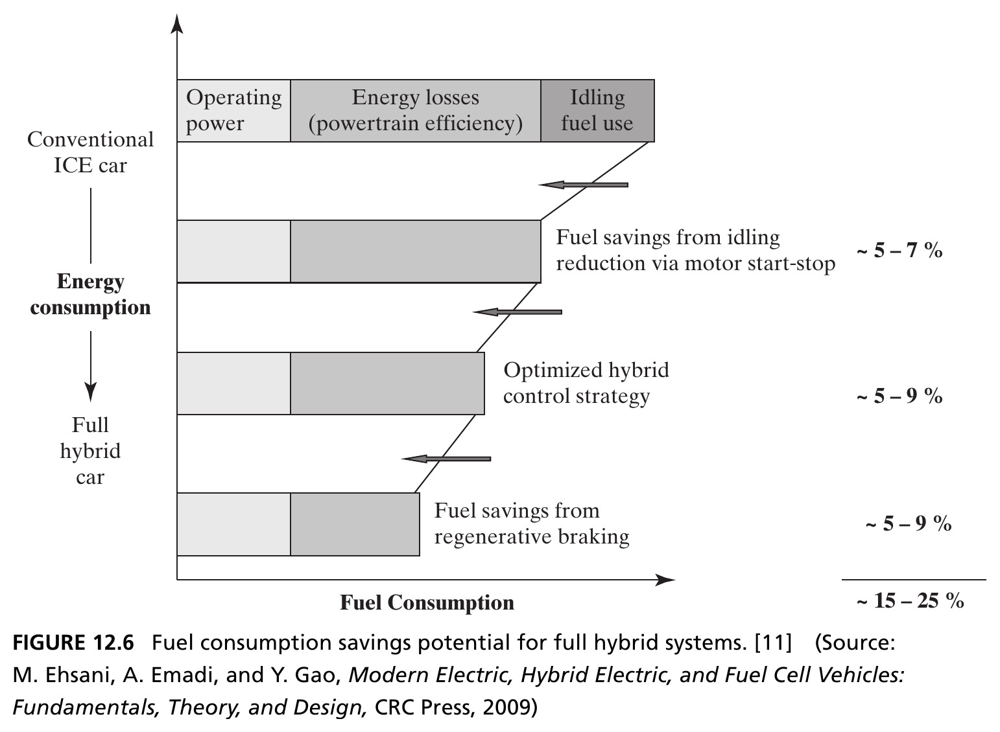
Idling reduction via motor start-stop saves ~5–7%; an optimized hybrid control strategy (combining load level increase, boosting, electric driving, gliding) saves a further ~5–9%; regenerative braking saves another ~5–9% — totaling ~15–25%. Source: Crawley, Cameron & Selva (2016), Fig. 12.6, after Ehsani, Emadi & Gao (2009).
Figure 12.7 · Why Boosting Helps at Low Speed
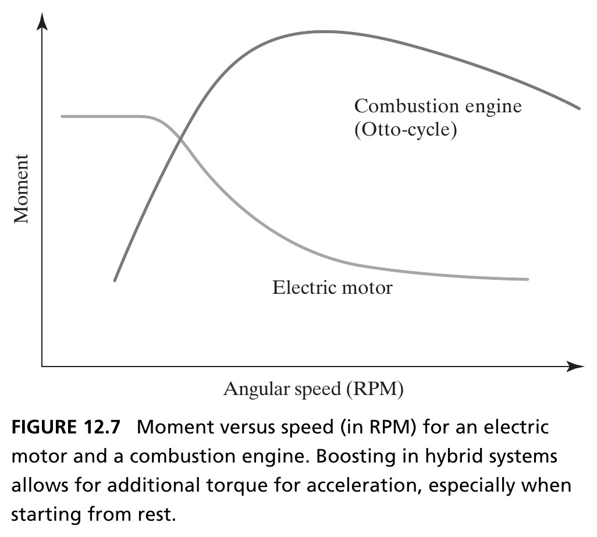
The electric motor delivers its highest torque starting from rest and low RPM — exactly where a combustion engine is weakest. Boosting lets the electric motor supply torque during the acceleration phase the engine handles worst. Source: Crawley, Cameron & Selva (2016), Fig. 12.7.
Step 3: Evolve and Refine Integrated Concepts
- The third step searches the space of concept fragments systematically, organized by the possible mappings between functions and forms
- Key question: is the energy storage function an input to the vehicle-moving function (a shared form — parallel hybrid), or do they use separate forms (series hybrid)?
Tip
Vehicles that mix both modes are combined hybrid systems — they may split fuel-converter energy across series and parallel paths simultaneously (power-split hybrids), or switch between the two.
Figure 12.8 · Parallel vs. Series Hybrid Drive
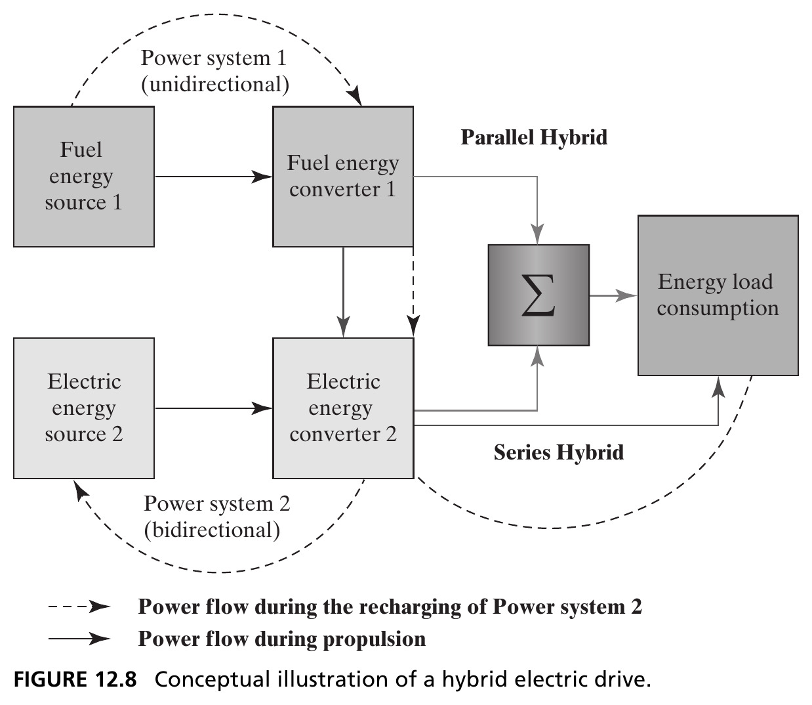
Parallel hybrid: both fuel and electric converters feed the summing energy load additively. Series hybrid: the fuel-based system runs sequentially — it only recharges the electric system, which alone drives the load. Source: Crawley, Cameron & Selva (2016), Fig. 12.8.
Figure 12.9 · The HEV Conceptual Solution Space
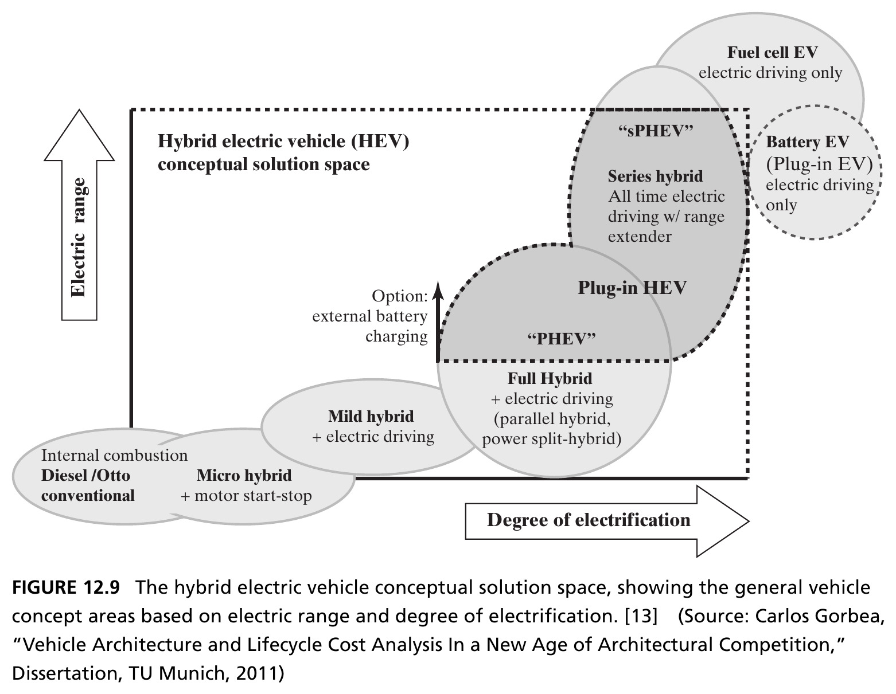
Two dimensions organize the space: electric range and degree of electrification (ratio of peak electric motor power to maximum combined power). Seven integrated concepts populate this space — from conventional ICE (0,0) to battery EV (degree = 1). Source: Crawley, Cameron & Selva (2016), Fig. 12.9, after Gorbea (2011).
Seven Integrated Vehicle Concepts
| Concept | Degree of Electrification | Electric Range |
|---|---|---|
| Conventional ICE | 0 | none |
| Micro Hybrid | minimal | none (start-stop only) |
| Mild Hybrid | limited | short, parallel only |
| Full Hybrid | 10–30% | 500 m – 3 km |
| Plug-In Hybrid | >35% | 5–160 km |
| Battery EV (BEV) | 1 | full electric only |
| Fuel Cell EV (FCEV) | series architecture | electric only, via fuel cell |
Step 4: Select Concepts with a Pugh Matrix
A Pugh matrix rates each candidate concept against a set of criteria — here, the goals from Chapter 11 — on a five-level scale from very advantageous (++) to many disadvantages (−−), relative to a chosen reference concept.
- Two screening criteria: a backward-looking comparison against the prioritized goals, and a forward-looking judgment of the concept’s potential for a good, elegant architecture
- Not every goal differentiates — a goal met equally by every concept (like “must accommodate a driver”) doesn’t help choose among them; it belongs to detailed design more than to the concept decision
Table 12.1 · Comparing Vehicle Architecture Concepts
| Goal | ICE | Micro/Mild | HEV (ref.) | PHEV | FCEV | BEV |
|---|---|---|---|---|---|---|
| Environmental satisfaction | −− | −−/− | o | + | ++ | ++ |
| Good fuel efficiency | −− | −−/− | o | + | ++ | ++ |
| Transport range | + | + / + | o | o | — | −− |
| Modest investment, sells in volume | ++ | ++/+ | o | −− | −− | −− |
| Desirable handling | + | +/o | o | − | −− | −− |
| Inexpensive | ++ | +/+ | o | − | −− | −− |
Condensed from the full Pugh matrix — every “critically” goal that doesn’t differentiate (regulatory compliance, driver size, passenger count) is omitted. ++ Very advantageous; + Some advantages; o Average; − Some disadvantages; −− Many disadvantages. Source: Crawley, Cameron & Selva (2016), Table 12.1.
Reading the Pugh Matrix
- The benefits of electrification: reduced tank-to-wheel emissions, better fuel consumption, an enhanced ecological image, government incentives
- The disadvantages: increased weight, reduced range, higher manufacturing costs, and commercial risk tied to servicing a first-generation high-voltage battery
- Beyond the qualitative Pugh scan, one could apply a quantitative comparison for the finalists — covered in Part 4
Tip
A subjective down-selection according to criteria like elegance — is the function-to-form mapping simple and pleasing, closer to one-to-one? — is often the final step in choosing 2–3 concepts for further development.
Section 12.3–12.6 Summary
- The Hybrid Car concept was expanded via its propulsion fragment (monovalent/bivalent/multivalent) and seven additional internal-function fragments (start-stop, regenerative braking, boosting, load-level increase, electric driving, external charging, gliding)
- Fragments were recombined systematically along the parallel/series mapping to produce seven integrated concepts, organized by electric range and degree of electrification
- A Pugh matrix, screened backward against prioritized goals and forward against architectural elegance, narrows the field to a small number for further development
Figure 12.10 · The Full Funnel
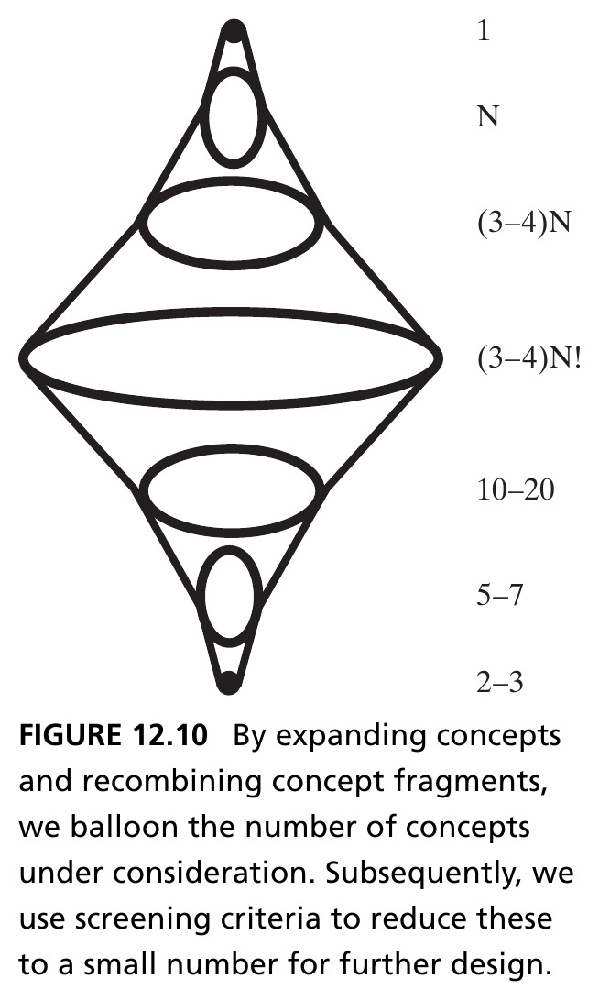
1 solution-neutral function → N concepts (Step 1) → (3–4)N concept fragments (Step 2) → (3–4)N! combinatorial integrated concepts (Step 3) → 10–20 qualitative down-select → 5–7 quantitative down-select → 2–3 final concepts (Step 4). Source: Crawley, Cameron & Selva (2016), Fig. 12.10.
Chapter 12 Summary
- Developing concept is the moment of peak creativity in architecting — both unstructured (brainstorming) and structured (component recombination, TRIZ, completeness frameworks) approaches are needed
- The four-step framework — develop, expand into fragments, evolve/refine integrated concepts, select — deliberately balloons the number of concepts before winnowing them against goals
- With concept chosen, the architect’s remaining task is managing the resulting investment in complexity — the subject of Chapter 13, where decomposition becomes the primary tool
Tip
Reference: Crawley, E., Cameron, B., & Selva, D. (2016). System Architecture: Strategy and Product Development for Complex Systems. Pearson. Chapter 12.
Case Study: Architectural Competition in the Automotive Industry
Early Architectural Competition
Architectural competition refers to differentiating a product from others in the market based on product architecture, rather than incremental improvement within a single dominant one.
- In the automotive industry’s early years, three fundamentally different concepts — electric, steam, and internal combustion — competed to dominate the market
- Electric cars were marketed to female drivers for ease of use and minimal maintenance; ICE cars targeted male drivers seeking power and speed; steam cars promised long range on a single “filling of the tanks”
Figure 12.11 · Marketing an Early Electric Car
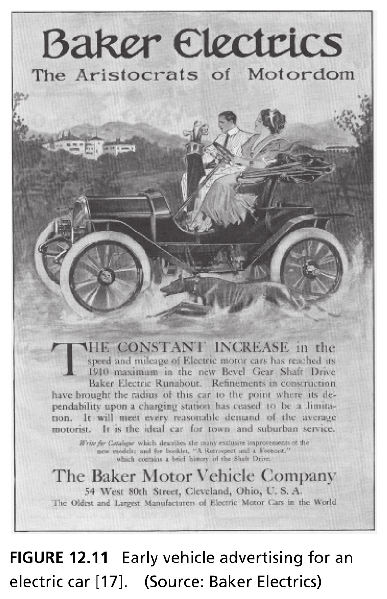
The Baker Electric Runabout marketed as “The Aristocrats of Motordom” — evidence of genuine architectural competition in the early automotive market, each architecture appealing to a different customer segment. Source: Crawley, Cameron & Selva (2016), Fig. 12.11. Source: Baker Electrics.
What Triggered ICE Dominance?
- Early steam cars had rapid acceleration but needed frequent water refills and 20 minutes to build boiler pressure; early electrics were simple but limited to ~64 km range and 32 km/h; ICE cars matched electrics in performance but were harder and riskier to start (hand crank)
- Two breakthroughs resolved steam’s core weakness (water dependency): the internal combustion engine and the electric motor — both first proven in rail and power generation before entering automobiles
- Ford’s assembly line (lower price) and the electric starter (removed the crank-injury risk) made ICE cars affordable and safe for the masses by 1920 — steam disappeared from the market entirely by 1930
Figure 12.12 · A Century of Architectural Competition
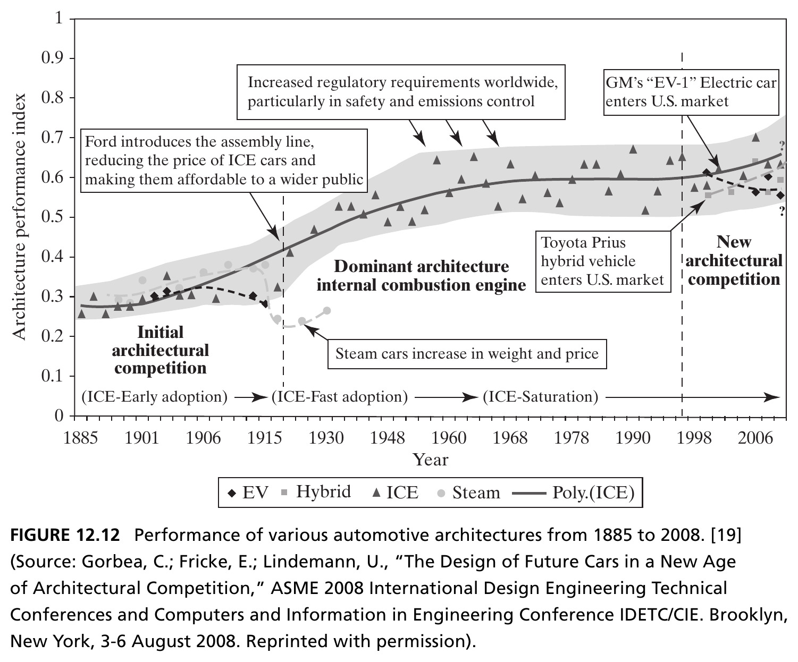
Three eras: initial architectural competition (1885–1915), dominance of the ICE architecture (1915–1998) — punctuated by regulatory pressure and GM’s EV-1 — and renewed architectural competition (1998–2008) beginning with the Toyota Prius and modern EVs. Source: Crawley, Cameron & Selva (2016), Fig. 12.12, after Gorbea, Fricke & Lindemann (2008).
The Lesson of Dominant Architecture
- Once the market adopted ICE as the single dominant architecture, the risk of not knowing which architecture would prevail was eliminated — manufacturers could focus innovation at the subsystem level, not the architecture level
- Decades of incremental innovation followed — most automakers built core competencies deeply specific to ICE design, leaving them poorly positioned to pivot when architecture became contested again
A shift back toward architectural competition can place established firms in real jeopardy — this was exactly the case for most steam manufacturers in the 1920s, who failed to adapt. The electric car was a loser in 1910. Could it become a winner again in a new period of architectural competition?
Next: Decomposition as a Tool for Managing Complexity
Having selected a concept, Chapter 13 turns to the architect’s remaining primary task: managing the explosion of complexity that follows, using decomposition as the central tool.

← Course Home · Systems Architecture · Chapter 12